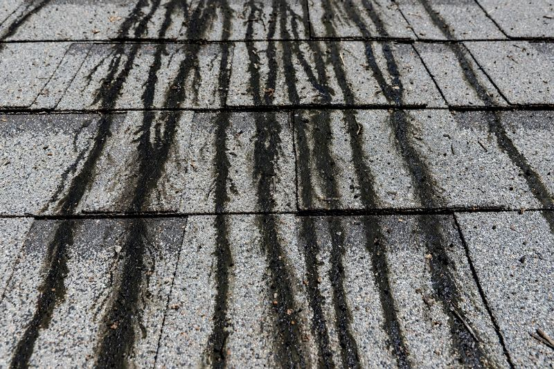
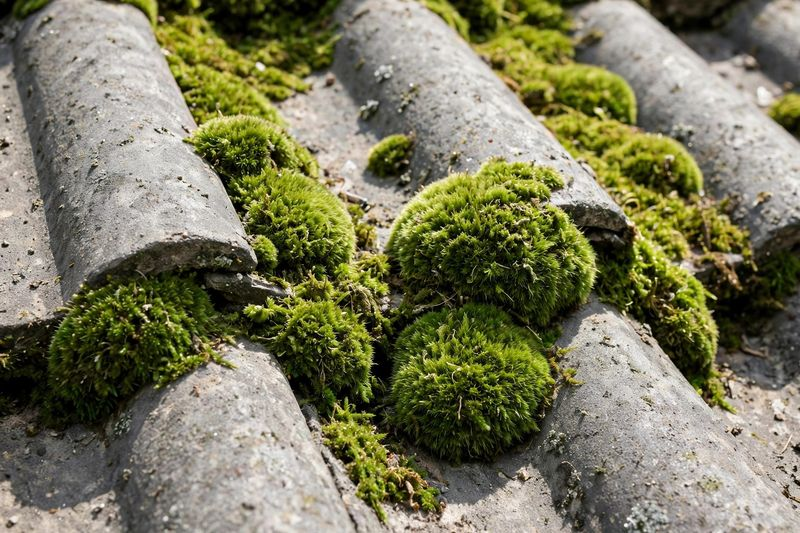
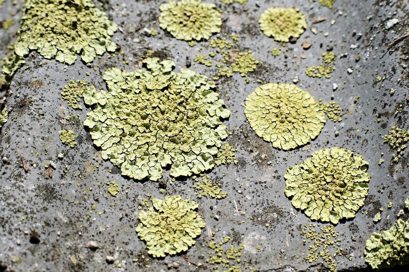

Method
Soft wash only. Never high pressure on shingles.
Gentle Soft Wash Roof Care
Black streaks, algae, moss and lichen — cleaned the gentle way, with soft washing matched to your roof.
7-Day Satisfaction Check • Reply within 24 hours
Professional Roof Cleaning
Your roof is exposed to rain, humidity, sunlight, leaves, and changing weather all year. Over time, that exposure leaves dirt, algae, moss, and organic buildup on the surface.
Our roof cleaning and soft washing service focuses on removing visible roof buildup with an approach suited to the roof material and its condition. We assess the roof first — we never treat every roof the same way.


What Is Growing on Your Roof?
Those black streaks running down your roof are often algae — a living organism. Gloeocapsa magma is the common algae behind black roof streaks, and it feeds on the limestone in shingles. It spreads in Jacksonville’s warm, humid air, and it comes back if you only rinse it off.
Soft washing treats the growth where it lives. No high pressure, no scrubbing — the treatment does the work, and a gentle rinse finishes it.
Soft wash only. Never high pressure on shingles.
Visible buildup is addressed. Results vary with the amount and condition of buildup.
No universal schedule. Clean when the buildup shows.
Shingles need a gentler approach than concrete. Roofs are not driveways.
Visible Roof Buildup
Roof material, slope, condition, and type of buildup should be considered before any cleaning method is used.
Dark streaks or patches may be associated with algae and organic buildup. Cleaning can address visible discoloration on suitable roofing surfaces.
Moss and organic growth can develop in damp or shaded areas. These areas should be assessed carefully before treatment.
Dust, dirt, pollen, and outdoor residue can accumulate on roof surfaces over time and affect the overall appearance.
Leaves, small organic debris, and other material can collect on roofs, particularly around trees and covered areas.
Rain, humidity, sunlight, and changing weather can contribute to surface residue and discoloration.
Soft Wash, Not Blast
Roofing materials can have different levels of sensitivity, and excessive pressure may cause unnecessary surface damage.
Soft washing uses lower water pressure together with an appropriate cleaning treatment. The treatment helps address organic buildup and surface residue without relying on high pressure alone.
High-pressure cleaning uses greater water pressure on suitable durable surfaces. Soft washing relies more on a cleaning treatment and controlled, lower-pressure rinsing.
Shingles and other roofing materials can require more controlled cleaning than hard ground-level surfaces such as concrete, driveways, or sidewalks.
Roof material, condition, buildup, organic growth, slope, accessibility, and surrounding property conditions all inform the cleaning approach.
The Soft Wash Way
Three steps, no blasting. The treatment does the work — not force.
The soft-wash treatment goes on from the ground or roof edge — no one needs to walk all over your shingles.
The treatment sits and works on algae, moss and lichen. Patience does what pressure cannot.
A gentle rinse finishes the job. Plants are pre-wet before and rinsed after, so they stay protected.
Check Your Roof from the Curb
Stand at the curb and look up. Tap anything you can see — the light below tells you what it means.
No warning signs right now. Keep an eye on the shady slopes and check again after the rainy season. Get a free quote any time you spot a change.
If you see damage or loose shingles, cleaning is not a substitute for roofing work. A roofer should look at it first.
More Than Looks
Dark algae soaks up Florida sun and heats the roof — and the attic under it. A clean roof reflects more light and looks newer from the street.
It is a simple step that helps the whole home. A roof that is looked after lasts better than one that is left to the weather.
Roof Field Guide
Three things grow on Jacksonville roofs. Look at each photo, read the clue, and guess what it is.

Black streaks running down the slope, worst on the shady side.

Fuzzy green clumps lifting the edges of the shingles.

Crusty pale spots that sit flat and will not brush off.
General Roof Care Guidance
Roofing guidance is the same everywhere: treat shingles gently, or leave them alone.
Pressure can blast off the protective granules that shield shingles from the sun. Once they are gone, they do not come back.
A professional cleaning treatment, applied and left to dwell. The treatment does the work — not force.
No scrubbing, no blasting. Dwell, then a gentle rinse, and the roof is checked for the visible result.
Landscape Protection
Roof cleaning touches more than the roof. The garden below it gets protected too.
Plants get a good soak with clean water before any treatment goes on.
Treatment that lands on plants is rinsed and neutralized so it does not sit on the leaves.
Downspouts concentrate runoff, so we watch where it flows and rinse as we go.
A final rinse of the plants and a walkthrough of the property finish the job.
Even with care, some plants are sensitive. Tell us about delicate landscaping before we start.
Get a free roof cleaning quote — we reply within 24 hours.
How Long It Lasts
Algae returns in Florida’s warm, humid climate — that is the honest answer. A proper soft wash buys time, and how long depends on shade, trees and moisture around your home.
There is no fixed schedule. Clean when the buildup shows.
Pro Tip
Streaked roofs are often flagged in home-inspection reports. A clean roof is one of the cheapest curb-appeal fixes you can make.
Roof Maintenance
Periodic roof cleaning can be part of an overall exterior maintenance routine for properties exposed to moisture, shade, leaves, and outdoor debris.
Refresh visible dirt, algae, moss, and surface residue on suitable roofing.
Address suitable areas affected by algae, moss, and other organic growth.
A cleaner roof can contribute to the overall appearance of your home’s exterior.
Roof cleaning can support broader exterior maintenance and property preparation.
Our Process
Five careful steps, every time. No shortcuts, no guesswork on your roof.
We consider roofing material, visible buildup, condition, slope, surrounding areas, and accessible sections before cleaning.
We look for algae, moss, dirt, leaves, discoloration, and other organic residue present on the roof.
Landscaping, outdoor items, and nearby exterior features are considered to minimize unnecessary impact.
When soft washing is suitable, an appropriate treatment is applied according to the roof and its condition.
The roof is cleaned with a controlled method, then the roof and surrounding areas are checked for the visible result.
Suitable Roof Surfaces
Every roof is assessed first. Here is what roof cleaning can cover.
Common residential shingles can develop algae, dark discoloration, dirt, and organic buildup. Suitable roofs can be assessed for an appropriate method.
Age, existing damage, loose shingles, and other concerns can affect whether cleaning is appropriate and how it should be performed.
Other roofing materials may have different requirements. The method should follow the specific material, condition, and manufacturer considerations.
If a roof has visible damage or needs repair, cleaning should not be treated as a substitute for professional roofing work.
Jacksonville Weather
Moisture, shade, trees, and changing weather can all contribute to visible roof residue and organic growth.
Moisture and humidity can create conditions where algae, moss, and organic growth may develop.
Rain and outdoor exposure can leave dirt, residue, and organic material on roofing surfaces.
Roof sections with limited sunlight may stay damp longer and be more susceptible to buildup.
Trees can contribute leaves, small branches, pollen, and organic debris that collect on the roof.
Where We Work
We clean roofs across Jacksonville and nearby communities. Find your area below.
Before We Arrive
A few small steps before we arrive help the wash go smoothly.
Roof Cleaning & Soft Washing FAQs
Soft washing uses lower water pressure together with an appropriate cleaning treatment. It is considered for surfaces where high pressure may be unnecessary or unsuitable.
There is no single method for every roof. The right approach depends on roofing material, condition, buildup, and other property factors.
Roof cleaning can address visible algae and related organic buildup on suitable roofing surfaces. Results vary with the amount and condition of buildup.
A shingle roof should be assessed before cleaning. A controlled lower-pressure approach may be more appropriate than high-pressure cleaning.
There is no universal schedule. Moisture, shade, surrounding trees, roof condition, and visible buildup can affect when cleaning may be needed.
Improper methods or excessive pressure can potentially damage roofing materials. The roof’s condition and material should be evaluated first.
Time varies based on roof size, slope, accessibility, amount of buildup, and cleaning method.
Not necessarily, depending on property and access arrangements. Access requirements can be discussed before service begins.
Roof cleaning is a maintenance step, not a repair. Check your shingle manufacturer’s care guidance for your roof.
Working hours are Monday to Friday, 9:00 AM to 4:00 PM Eastern Time. 7-Day Satisfaction Check: if a spot remains within 7 days, we will re-clean that spot free. We reply to estimate requests within 24 hours.
More Exterior Cleaning
One visit can cover more than the roof. See our other Jacksonville cleaning services.
From residential shingle roofs to other appropriate roof surfaces, the cleaning approach can be selected according to material, condition, and type of buildup.
7-Day Satisfaction Check: if a spot remains within 7 days, we will re-clean that spot free.
Working hours: Monday to Friday, 9:00 AM to 4:00 PM Eastern Time.